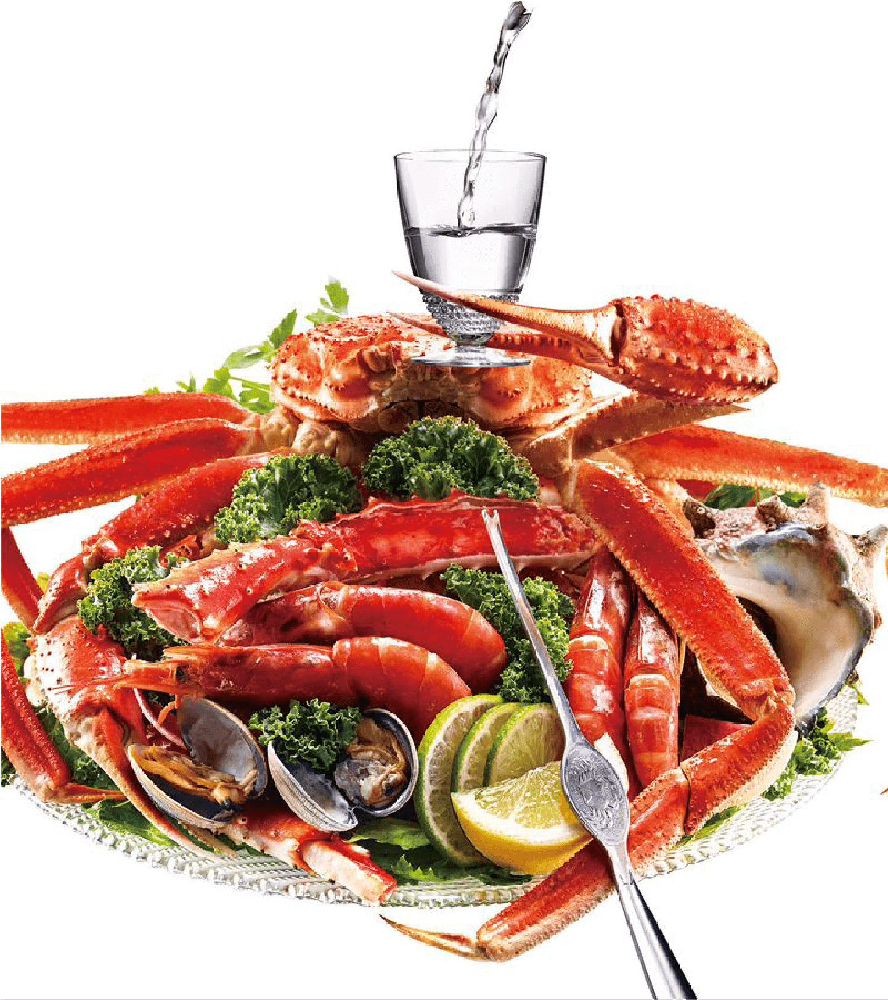

Participating Restaurants
Sake complements a variety of cuisines,
which is why the country’s top chefs have lent their
culinary skills in creating original and inspired seafood
dishes that will pair perfectly with their selected sake.

From 1st October 2024
Click on the logo to view full details
Johor Bahru
Kuala Lumpur
From 1st October 2024
Click on the logo to view full details
Johor Bahru
Kuala Lumpur